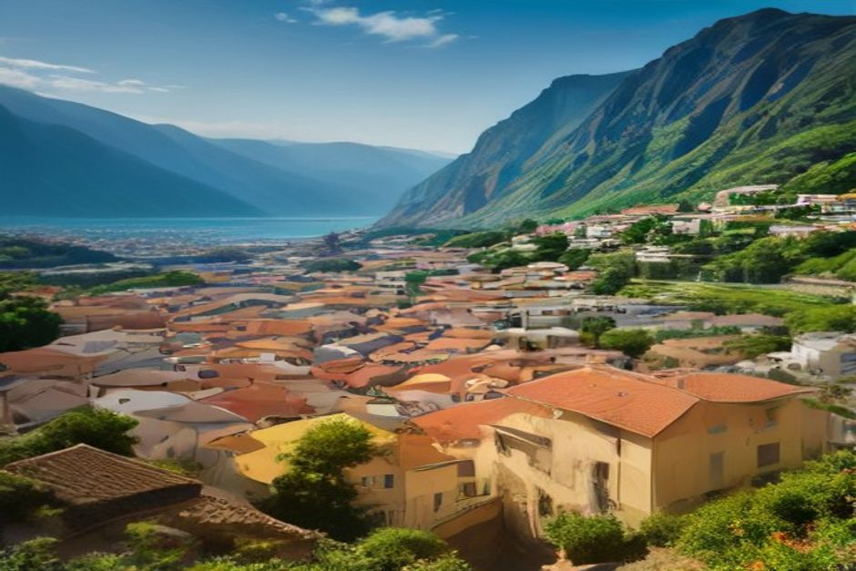
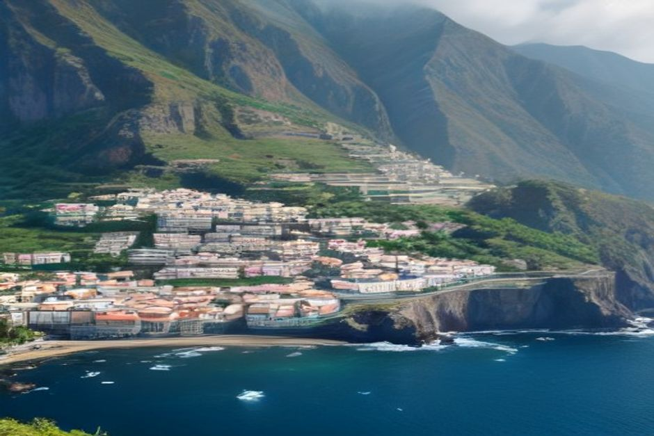

Which Madeira village is actually worth the drive? These ten — ranked by what they genuinely offer, not just how they photograph — cover fishing harbours, thatched hamlets, a crater valley and the island's only real sand beach.
1. Câmara de Lobos — the fishing village Churchill painted
Câmara de Lobos is Madeira's most photogenic working harbour: black volcanic sand, stacked fishermen's houses and the espada boats that still go out for black scabbardfish at night. Winston Churchill painted the cliffside here in 1950, and the miradouro named after him still frames the same view. It's also the first stop on Chifbay's private Day Trip from Funchal, ten minutes by sea from the marina.

2. Ribeira Brava — the village with a proper swimming beach
Ribeira Brava sits where a river meets the sea, with a pebble beach calm enough to swim from and a 16th-century church, São Bento, with a striking pyramid-tiled dome. It's the halfway point on the south coast road and a natural place to break a drive with lunch by the water.
3. Ponta do Sol — the sunniest village on the island
Ponta do Sol logs the most sunshine hours of anywhere in Madeira, which is why it's become the island's small hub for remote workers. A short pier, black-sand cove and a cluster of good cafés make it worth an hour's stop even if you're not staying overnight; it's also the furthest point on Chifbay's extended 3-hour Day Trip.
4. Porto Moniz — for swimming, not sand
Porto Moniz has no beach at all — instead, Atlantic waves fill natural volcanic pools carved into the lava rock, which is the entire reason to come. It sits at the island's northwestern tip, roughly an hour and a half from Funchal by the coastal road, and the pools are busiest — and warmest — in the early afternoon.
5. São Vicente — caves cut into a green ravine
São Vicente is worth the stop for the Grutas de São Vicente, lava tube caves formed by an eruption around 890,000 years ago, and for the ravine setting itself — steep, green and dramatically narrower than the south coast. It's the natural midpoint if you're driving the full north coast in a day.
6. Santana — for the thatched A-frame houses
Santana is known for its palheiros, triangular thatched houses with brightly painted doors that were genuinely lived in until a few decades ago. A handful survive as a small open-air museum on the edge of the village, and the surrounding parish hosts the Festa do Faial each September, one of the north coast's oldest religious festivals.
7. Curral das Freiras — a village inside a volcanic crater
Curral das Freiras sits at the bottom of a collapsed volcanic caldera, reached by a road that tunnels through the mountain and a viewpoint, Eira do Serrado, that frames the whole valley from above. Nuns from a Funchal convent fled here in the 16th century to escape pirate raids, which is where the name — "Nuns' Corral" — comes from. Chestnuts, grown on the slopes above the village, turn up in everything from soup to liqueur.
8. Machico — where Madeira's first settlers landed
Machico is where João Gonçalves Zarco's expedition came ashore in 1419, making it the island's oldest settled point. Today it has one of Madeira's few sandy beaches, backed by a promenade and a small fort, and sits five minutes from the airport — a natural first or last stop on a trip.
9. Calheta — the only proper sand beach on the island
Calheta imported golden sand from Morocco to build the beach that most of Madeira's coastline can't offer naturally, and it now anchors a small marina and a modern cultural centre, Casa das Mudas. It's on the far west of the south coast, close to an hour from Funchal, which makes it more of a day trip than a quick stop.
10. Seixal — the quietest natural pools on the north coast
Seixal has the calmest, least crowded natural pools on the north coast, sheltered enough to swim in most conditions that would close Porto Moniz's. Banana terraces climb the hillside directly behind the village, and a waterfall, Véu da Noiva, drops onto the coastal road just before it.

The road connects these villages. The water shows you why each one is where it is.
If your time is limited, Câmara de Lobos, Ribeira Brava and Ponta do Sol form a natural south-coast trio — and they're the same three stops Chifbay reaches by sea in an afternoon, without a single hairpin bend.